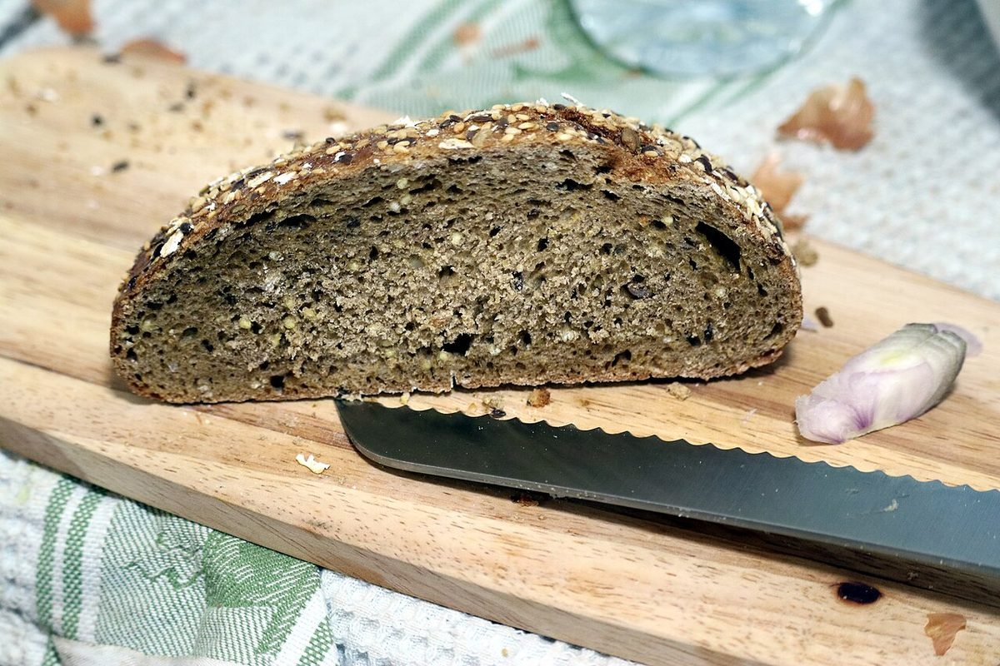
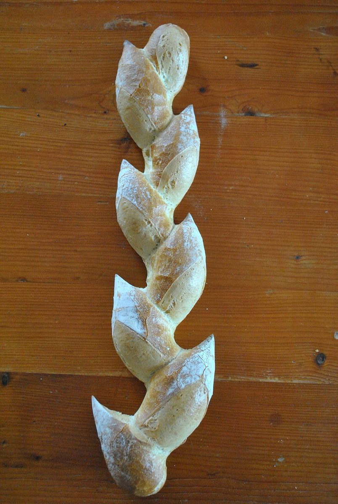

測定票 No.00検体名: キナリ種別: パン屋
キナリ

純白から、ほんの少し手前。
生成りの色を見本帖にしました。
五つの白ページ=色見本。左が純白、右へ行くほど生成り


確認できていること測定項目と記入欄
| 所在地 | 〒446-0052 愛知県安城市福釜町荒子55−１ |
|---|---|
| @bakery_kinari | |
| 電話 | なし |
| 営業時間 | 準備中 |
| 定休日 | 準備中 |
| 駐車場 | 準備中 |
白の手前の色あいイメージ写真(国外・撮影地不明)




純白から、ほんの少し手前。
生成りの色を見本帖にしました。
| 所在地 | 〒446-0052 愛知県安城市福釜町荒子55−１ |
|---|---|
| @bakery_kinari | |
| 電話 | なし |
| 営業時間 | 準備中 |
| 定休日 | 準備中 |
| 駐車場 | 準備中 |

